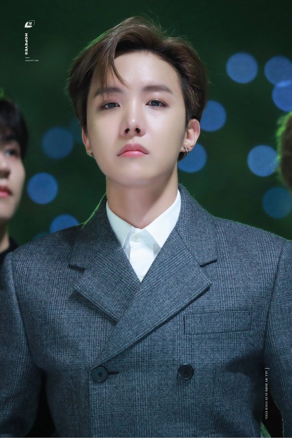

BTS was formed by Bang Si-Hyuk, a successful songwriter and music producer who established his own studio, Big Hit Entertainment, in 2005. In 2010 he began to assemble talent for a group he was calling the Bangtan Sonyeondan (“Bulletproof Boy Scouts”), which would later become better known as BTS.
RM (whose full name is Kim Namjoon) is the band's leader and main rapper. Born on Sept. 12, 1994, RM grew up in Ilsan, South Korea, and began rapping at a young age. He made some waves in the underground rap scene — performing under various names, including Large, Stealo and Runch Randa — and eventually caught the eye of the South Korean record label Big Hit Entertainment (later rebranded into HYBE), who formed BTS and recruited him to be the first official member in 2010.
Over the years, RM has been praised for his fluency in English. During an appearance on The Ellen Degeneres Show, RM revealed that he taught himself English by watching the iconic sitcom Friends. "My English teacher was the sitcom Friends," he explained. "Back in the days, when I was like 15, 14, it was quite like a syndrome for all the Korean parents to make their kids watch Friends. I thought I was kind of like a victim at that time, but right now, I'm the lucky one, thanks to my mother."
RM added that his mom bought him all 10 seasons of the hit show on DVD. "So firstly, I watched them with the Korean subtitles, and then next time, I watched with the English subtitles, and then I just removed it."
During their annual FESTA dinner in June 2022, BTS shared that they would be taking a break to pursue solo projects and figure out their next steps as a band.
"I always thought that BTS was different from other groups, but the problem with K-pop and the whole idol system is that they don't give you time to mature," RM said during the event. "You have to keep producing music and keep doing something."
HYBE later clarified in a statement that the group was not taking a hiatus and would remain active "as a team while taking individual journey to further achieve personal growth."
RM made his official solo debut with his first studio album, INDIGO, in December 2022.

Jin (whose full name is Kim Seokjin) was born on Dec. 4, 1992, in Gwacheon, South Korea. He is the oldest member of the group and the first member to begin mandatory military service in South Korea— a requirement that must be fulfilled by able-bodied men in the country before they're 28 years old.
Often referred to as "Worldwide Handsome," Jin joined the group in 2013 as one of the four main vocalists. In 2017, Jin graduated from Konkuk University in South Korea, according to a tweet from BTS' official Twitter page, with a degree in acting and art.
Jin is also BTS' resident foodie. He previously had his own food web series, Eat Jin, and he is the co-owner of a Japanese restaurant called Ossu Seriomushi, located in Seoul, South Korea. In August 2022, Jin made use of his time off from BTS and got back in the kitchen, receiving a cooking lesson from celebrity chef and South Korean television personality Lee Yeon-bok, per Billboard.
During an interview with Weverse Magazine, Jin opened up about finding his confidence as an individual, outside of BTS.
"It used to be that any time I had to do something, I thought it was such a big deal. Like, how can I handle something this big right now," Jin told the outlet. "I would always feel discouraged, but my personality has changed a lot now, I think. I think the biggest change in my mind is that now, even if there's a major project in the works, I think I can do it now."
He added, "Now, instead of, 'How can I handle this?' it's 'I can handle this!' when I'm making songs for other people to listen to."
Jin released the solo single, "The Astronaut," which was co-written by Chris Martin of Coldplay, in October 2022.

Suga (whose full name is Min Yoongi) was born on March 9, 1993, in Daegu, South Korea. He is the group's lead rapper and one of the main producers of BTS' music. Suga is also known for his solo work under the name Agust D.
These days, in addition to his involvement with BTS, Suga performs as a solo rapper under the alias Agust D, which is a play on his stage name and a reference to his hometown. He is also a commercial producer under the name "By Suga."
Of his different aliases, he told GQ Austalia, "All three are me. They each take up a third of myself, and one isn't more reflective of me than another. I simply give people a choice. These three sides of myself are incredibly different, so I'm giving people a choice to see me as they want."In April 2022, Suga produced and was featured on "Gangnam Style" singer Psy's comeback song "That That."
Suga made his foray into the fashion world in January 2023, when Italian fashion house Valentino announced him as their latest brand ambassador. Suga joined the company's Di.Vas ambassador group, which stands for Different Values, per WWD.
Pierpaolo Picciolo, Valentino's creative director, described Suga to the outlet as a "multifaceted artist" who expresses himself with "authenticity and energy." He added, "He perfectly embodies everything that DI.VA.s testimonials stand for: diversity, inclusivity, creativity, and passion." In September 2023, Suga became the third member of BTS to enlist in the South Korean military.
J-Hope (whose full name is Jung Hoseok) was born on Feb. 18, 1994, in Gwangju, South Korea. J-Hope got his start as a dancer and won several competitions in South Korea. He was then recruited by Big Hit Entertainment in 2010 and began training as a rapper. Now, he is one of three rappers in the group, as well as a dancer, songwriter and producer. He was also the first BTS member to start a solo career.
In 2019, J-Hope teamed up with singer Becky G to release the song "Chicken Noodle Soup." The "Shower" singer opened up about her collaboration with J-Hope during an interview with Teen Vogue. "We were one of the first to do Korean, Spanish, and English. It's really badass," she told the outlet.
Of their language barrier, she added, "I'm so happy that it happened the way it did. To this day, it's one of those, 'I see you, you see me, and even though we may not necessarily have the deepest conversations, we get it' [relationships]." The duo performed the song at Lollapalooza 2022 during J-Hope's historic headlining set, which made him the first South Korean artist to headline a main stage at a major American music festival.
J-Hope released his debut solo mixtape, Hope World, in 2018. The project was a commercial success, debuting at No. 63 on the Billboard 200 chart and earning J-Hope the title of the highest-charting solo Korean artist on the chart at the time.
He followed up the mixtape with the single "Chicken Noodle Soup" featuring Becky G in 2019. The song was a commercial success, debuting at No. 81 on the Billboard Hot 100 chart and earning J-Hope his first entry on the chart as a solo artist.
On New Year's Eve 2023, J-Hope performed in Times Square in New York City for Dick Clark's New Year's Rockin' Eve with Ryan Seacrest. In February 2023, J-Hope became the second member of BTS to enlist in the South Korean military. "We would like to inform our fans that j-hope has initiated the military enlistment process by applying for the termination of his enlistment postponement," the group's label, BIGHIT MUSIC, said in a statement. "We ask for your continued love and support for j-hope until he completes his military service and safely returns."
Jimin (whose full name is Park Jimin) was born on Oct. 13, 1995, in Busan, South Korea. He is another one of the group's main dancers, and he studied dance in high school. He was the last to join BTS, becoming a member of the group in 2013.
In recent years, Jimin has also ventured out independently and taken on new projects. In early January 2023, he was featured on South Korean singer Taeyang's song "Vibe." Just a few days later, Dior announced Jimin as their new global brand ambassador.
The artist celebrated the news on Instagram, writing, "So thrilled to start a journey with @Dior!" He added in Korean, "Honored to be Dior's Global Ambassador! Stay tuned for a lot of things to come!"
Jimin has kept plans of a solo album close to his chest, however, in an interview with W Korea on Jan. 23, 2023, he hinted that there is an album in the works. "Lately, I am working on a solo album. That's what I have been up to. Nothing special … " he said subtly.
V (whose full name is Kim Taehyung) was born on Dec. 30, 1995, in Daegu, South Korea. He grew up singing and playing the saxophone, and he eventually joined BTS after auditioning for Big Hit Entertainment in 2013.
After making his official debut with BTS, V also took on acting projects and debuted as an actor in the historical drama Hwarang: The Poet Warrior Youth. V also starred on In the Soop: Friendcation, a reality show on Disney+ that followed the singer and his real-life actor and musician friends, including Parasite star Choi Woo-shik, while they were on vacation. BTS originated the franchise with 2020's BTS In the Soop.
On his 25th birthday in December 2020, V released the song "Snow Flower," which is a collaboration with singer-songwriter, producer and rapper Peakboy. Upon its release, he also discussed an upcoming solo mixtape.
In December 2021, when the BTS members joined Instagram, V broke two Guinness world records in the process. The singer broke the record for the fastest time to reach both 1 million followers and 10 million followers. That same month, he released the holiday song, "Christmas Tree," which immediately topped the Billboard charts and earned him his first solo No. 1, per Billboard. The following year, he released a cover of the Christmas song "It's Beginning To Look A Lot Like Christmas" on Dec. 23, 2022.
V is reportedly single. However, he's rumored to be dating Jennie from Blackpink. The pair were spotted holding hands on a stroll through Paris in May 2023.
Jungkook (whose full name is Jeon Jung-kook) was born on Sept. 1, 1997, in Busan, South Korea. He is the youngest member of BTS and ARMY affectionately call him "Kookie" or "Golden Maknae," which translates to "golden youngest."
When he was a teenager, Jungkook auditioned for the Korean talent show Superstar K during its third season in 2011. While he never made it to the finals, his audition did get him recognized by a few talent agencies, including Big Hit Entertainment. He began training under the label and joined BTS in 2013 as one of the four main vocalists and a dancer.
Jungkook was inspired by his bandmate J-Hope to make his own music as a solo artist. "It was really funny. After hearing the album, [Jungkook] suddenly went to his studio," J-Hope told Rolling Stone in July 2022. "I think he felt the motivation to start. I love that one of our greatest motivators is one another."
While his solo album is still in the works, he has released a few solo tracks, including "My You," "Still With You," and "Dreamers," which was part of the 2022 FIFA World Cup official soundtrack.
In July 2023, Jungkook made his solo performance debut at Good Morning America's Summer Concert Series in New York City. He performed three songs, including his single "Seven," before severe weather rolled over Central Park. A few months later, Jungkook became the fourth member of BTS to enlist in the South Korean military.

The leader of BTS is RM, who is also the main rapper of the group. RM, whose real name is Kim Namjoon, is known for his exceptional rapping skills, thoughtful lyrics, and charismatic stage presence. As the leader of BTS, RM plays a crucial role in guiding the group, overseeing their creative direction, and representing them in various public appearances. His leadership, vision, and dedication have been instrumental in BTS's success, helping them to become one of the biggest music acts in the world.
The oldest member of BTS is Jin, whose full name is Kim Seokjin. Born on December 4, 1992, Jin is known for his powerful vocals, striking visuals, and warm personality. As the eldest member of BTS, Jin plays a key role in the group, providing guidance, support, and wisdom to his younger bandmates. His maturity, humor, and caring nature have endeared him to fans around the world, making him a beloved figure in the BTS community.